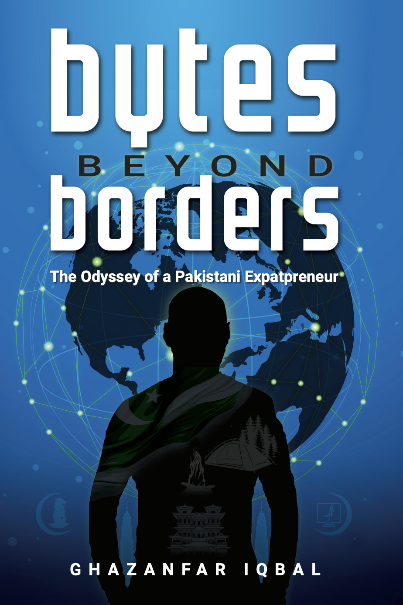
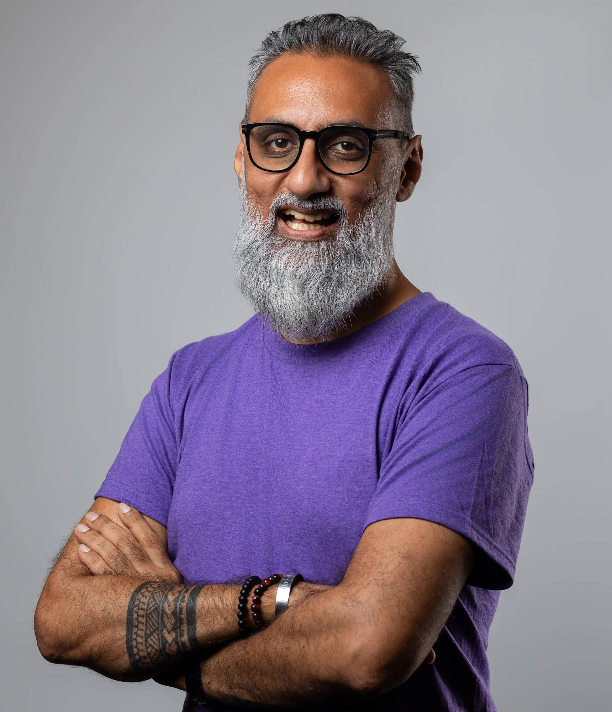
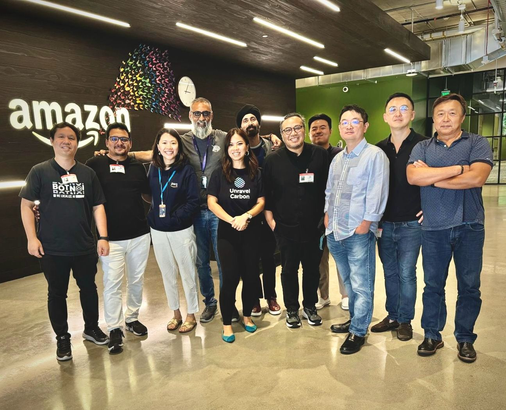
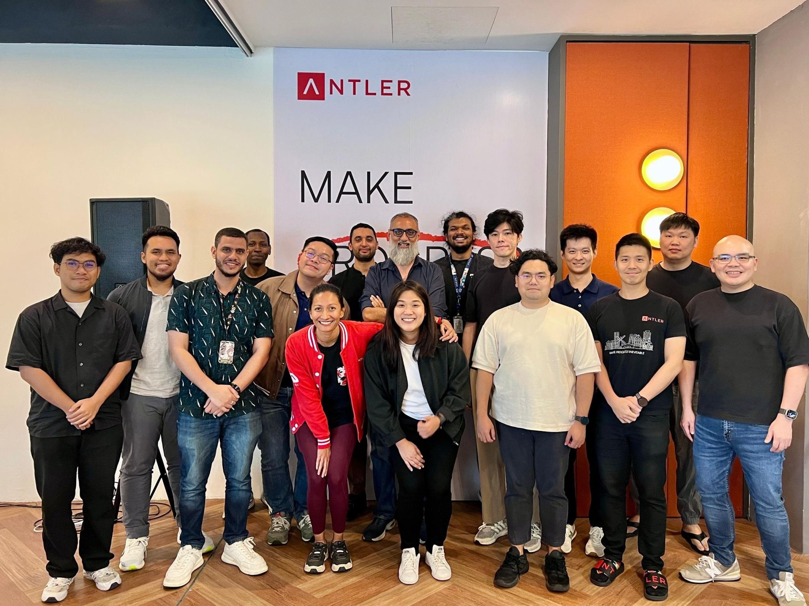
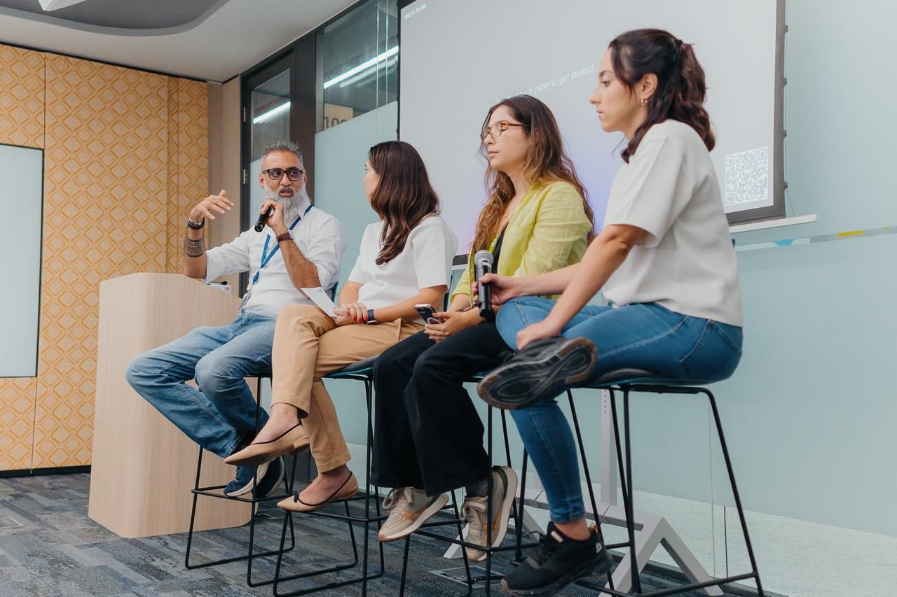
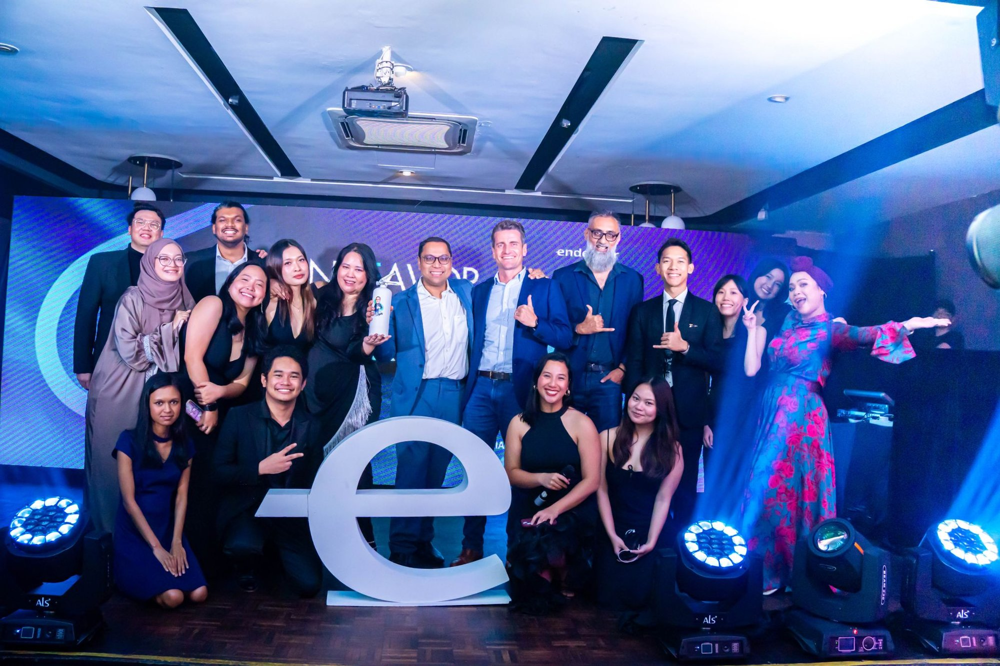
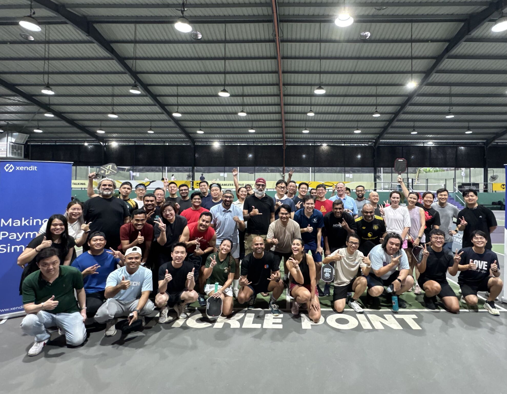
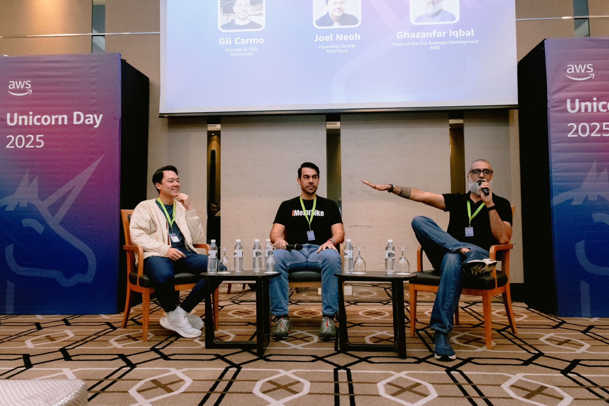
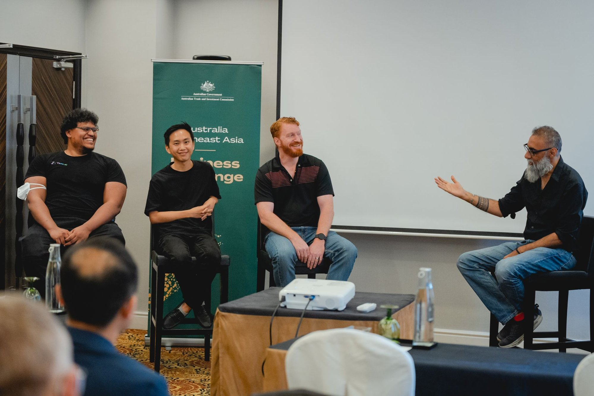
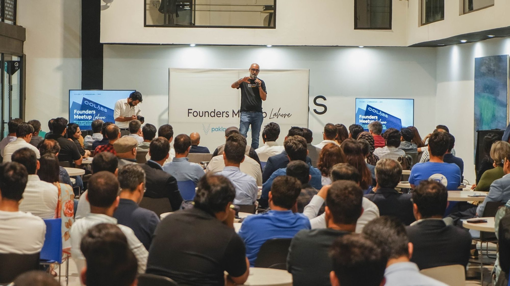

Author · Ecosystem Builder · Investor
I'm Ghazanfar Iqbal, but more commonly now known as Ghaz. My name means "Lion" in Arabic,
which felt like more than coincidence when I found myself building a startup beneath
Singapore's Merlion.
I've spent 16 years building across 5 countries, and I wrote a book about
what it took to get from Pakistan to the startup ecosystems of Southeast Asia.


Born in Gujranwala, raised and schooled in Multan, Pakistan. I started my career from the ground up. Early roles taught me resilience, hustle, and the power of reinvention. I've never had a linear path, and that's become the story itself.
I was selected from 106 teams for Telenor's global innovation program, incubated across Oslo, Bangkok, and Singapore. From there I co-founded AutoSahulat through Antler, the first Pakistani startup they ever funded. The venture faced unexpected challenges that ultimately led to an exit, but it gave me lessons no MBA ever could.
I then joined Careem (MENA's first unicorn, now Uber) as Country Head for Careem For Business, doubling corporate revenue during COVID with a model everyone said was dead. Then I crossed another border: to Amazon Web Services in Kuala Lumpur, where I now work with investors and founders shaping ASEAN's next generation of startups.
Along the way I represented Pakistan at Harvard HPAIR, became an Acumen Fellow, mentored founders across four countries, and in April 2024 published Bytes Beyond Borders, the book I wished someone had put in my hands at 25.
I believe in the power of stories to transcend borders, geographical and metaphorical. I believe in unlearning to learn. And I believe the most important chapter in anyone's life begins with the words "And yet..."




Every transition taught me something a business book couldn't.
Selected from 106 teams for the global intrapreneurial program. Three cities. One question: how do you innovate from within?
IntrapreneurCo-founded the first Pakistani startup funded by Antler. $100K pre-seed. Empowering mechanics digitally. Faced challenges that led to an exit, but the lessons outlasted the company.
FounderCountry Head for MENA's first tech unicorn (now Uber). Doubled corporate revenue with the Dedicated Fleet model, when everyone said B2B mobility was dead.
OperatorFrom Startup BD Head (MY/PK/SG) to Senior Investor Manager, ASEAN. Building the bridge between VCs, founders, and cloud at scale.
Ecosystem BuilderPublished my debut. Creative nonfiction. The book I wish someone handed me at 25, now available globally on Amazon.
AuthorEach chapter revisits a pivotal moment, structured around experiences that collectively paint the odyssey of an outsider finding his way in.
The Arabian Sea, strangers at dawn, and the border that bisects you from within.
The art of storytelling as a survival skill, from oral traditions to boardrooms.
Personal branding isn't marketing. It's the courage to be seen as you actually are.
The things no one will teach you because they're uncomfortable or culturally taboo.
On vulnerability, masculinity, and the strength it takes to feel things fully.
The tension between where you come from and where you're headed, and why both matter.
The bigger the wave, the deeper we must dive, as in business.
The power of service, showing up, and being generous before you need anything in return.
Why giving is the ultimate long game in business and in life.
Building communities, ecosystems, and gathering spaces where ideas collide.
The fine line between adaptability and perseverance. When to stay. When to go.
Singapore's Merlion, the elephant-ant duality, and what lies ahead where you're meant to be.
Navigating cultural divides, belonging everywhere and nowhere, and the art of crossing borders both geographical and metaphorical.
The cycle of learning, unlearning, and relearning. Why letting go of what you know is the most underrated skill.
Losing a company, pivoting careers, starting from scratch, and why the story doesn't end when things fall apart.
Embrace your inner Mirasi. Personal branding is storytelling, the courage to be seen as you truly are.
Bring people to the courtyard. One person can catalyze a community, from Pakistan to Singapore to Malaysia.
Resilience, adaptability, and the chapters that begin with "And yet..." A testament to the enduring human spirit.




Weekly insights on startup funding, AI trends, and the human side of building things. The thoughts that don't fit in a pitch deck. Follow along.
Whether you're a founder, an investor, or someone who resonates with the outsider's story, the courtyard is open. Come in.